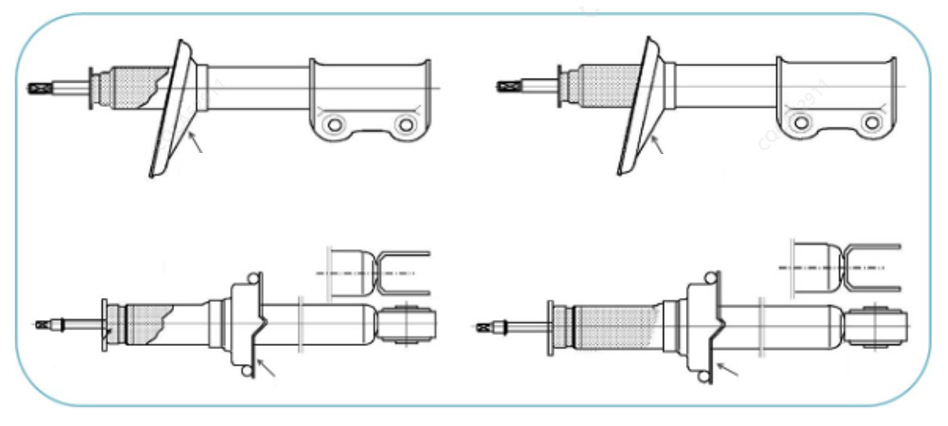
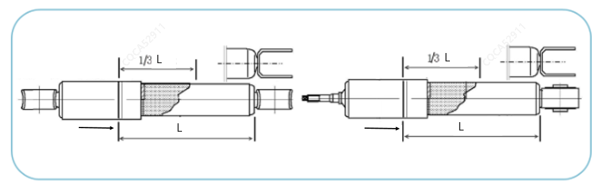
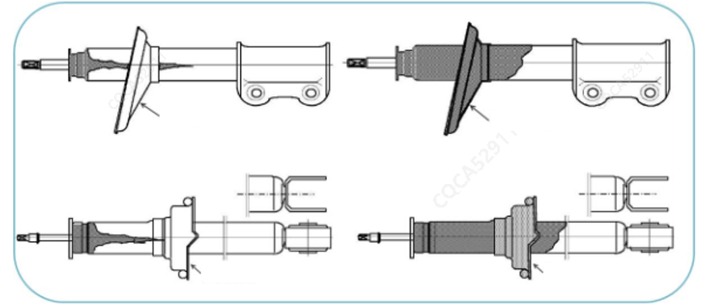
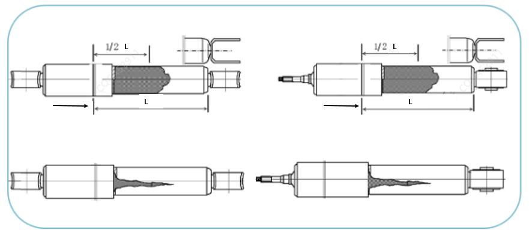

减振器的工作原理就是靠减振器油液将动能转换为热能释放到大气中去。随着产品使用时间增加或里程数的增加，减振器产品在使用过程中储油筒表面可能会有油迹附着，此时需正确的判断到底是“渗油”还是“漏油”，若为渗油，则为正常现象，无需处理，若为漏油，则需更换减振器单体。
渗油：减振器工作过程中，活塞杆表面的润滑油被油封刮下的微量油液。
渗油机理：
为提高减振器零部件的使用寿命，通常对减振器活塞杆的表面进行镀铬处理，并对活塞杆进行研磨，在活塞杆表面形成网状“微裂纹”，微量的减振器油液会附着在活塞杆表面的网状微裂纹中，形成一层油膜，使活塞杆和油封之间的摩擦为湿摩擦，可减小活塞杆与油封的摩擦力，提升减振器的可靠性及NVH性能；随着活塞杆的上下往复运动，减振器温度升高，会有微量的油液形成油雾，吸附在储油筒表面，产生“渗油”现象。
漏油：减振器在静止或工作状态下外表面有来自其内部的油液泄露。
假性漏油：外部油液污染。
因减振器工作环境较为恶劣，路面上的水渍或油液可能会溅到减振器筒体上，造成假性漏油，测试需仔细确认油迹现象进行漏油判断。减振器筒体或局部有油迹，油迹不连续且无明显渗漏源，可判定为行驶中外来油液污染。
渗油判断：针对带弹簧托盘式减振器
油迹可见，但无光泽或者是与灰尘混合后形成的较为干燥的油迹，用手触摸油迹表面，指纹中无明显油迹；
油迹呈周向均匀分布于筒体表面，无“股状”或“液流”状痕迹，油迹分布于减振器筒体端盖表面到弹簧托盘（箭头处）上方。

渗油判断：针对不带弹簧托盘式减振器
油迹可见，但无光泽或者是与灰尘混合后形成的较干燥油迹，用手触摸油迹表面，指纹中无明显油迹；
油迹呈周向均匀分布于筒体表面，无“股状”或“液流”状痕迹，油迹轴向分布的长度为未超过筒体长度的1/3（含）。（箭头处为筒体端盖）

漏油判断：针对带弹簧托盘式减振器
筒体表面乌黑甚至筒体上有大量油迹，用手触摸油迹表面，指纹中有肉眼可见的油迹；
油迹分布不均匀，油迹呈“股状”或“液流”状流至弹簧托盘（箭头处）以下位置。

漏油判断：针对不带弹簧托盘式减振器
筒体表面乌黑甚至筒体上有大量油迹，用手触摸油迹表面，指纹中有肉眼可见的油迹；
油迹分布不均匀，油迹呈“股状”或“液流”状流至超过筒体全长的1/2位置。（箭头处为筒体端盖）

经判断为外部油液污染或渗油的零部件，禁止更换，可进行擦拭处理后继续使用；
经判断为漏油的零部件，可更换减振器单体（禁止更换前支柱总成），并按长安的相应要求上传维修信息；
尽量不要选择雨雪天气进行减振器渗漏油的判定，如需判定须将减振器上的油、水等痕迹擦拭清理干净并重新跑车后再进行判定；
判定单边减振器漏油的车辆，对单只减振器维修，不允许成对维修。